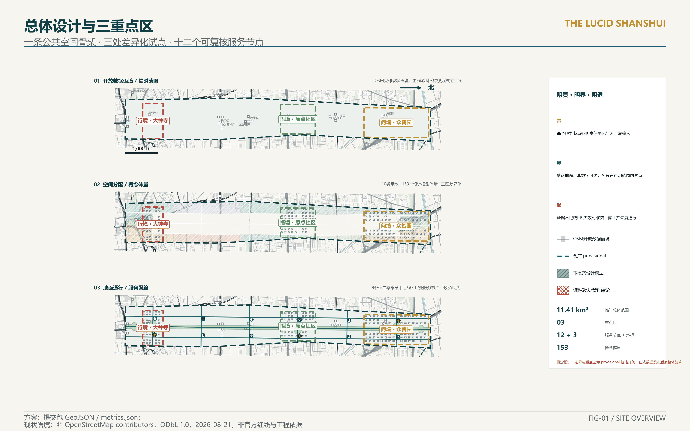
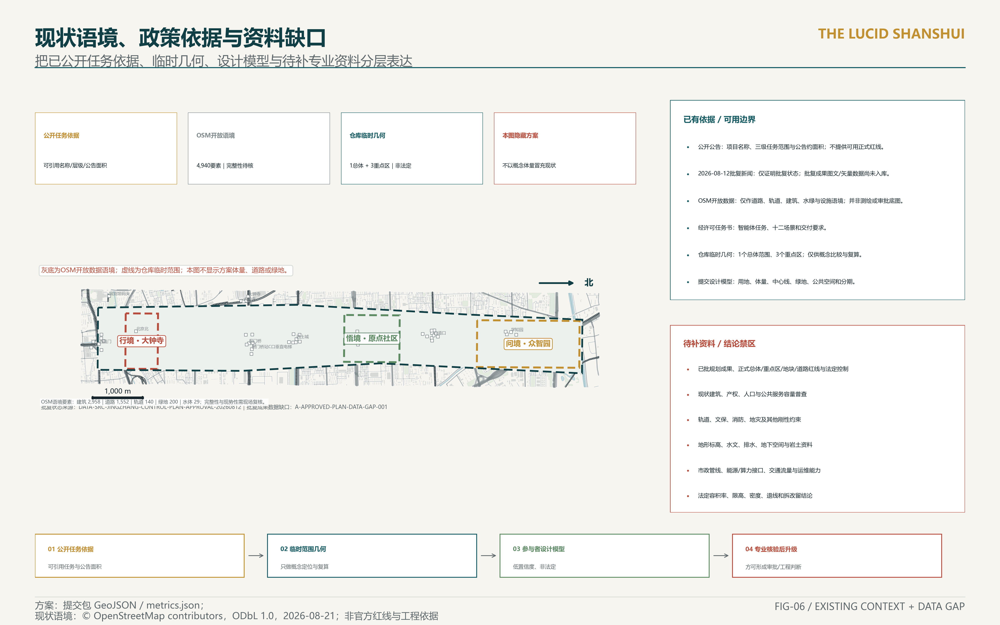
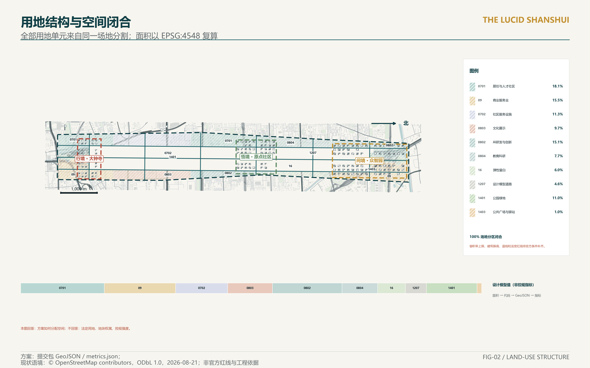
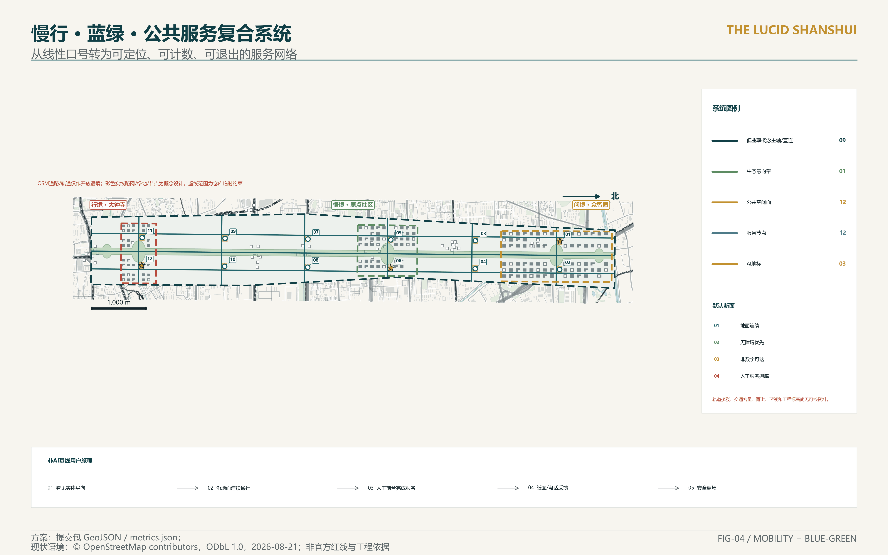
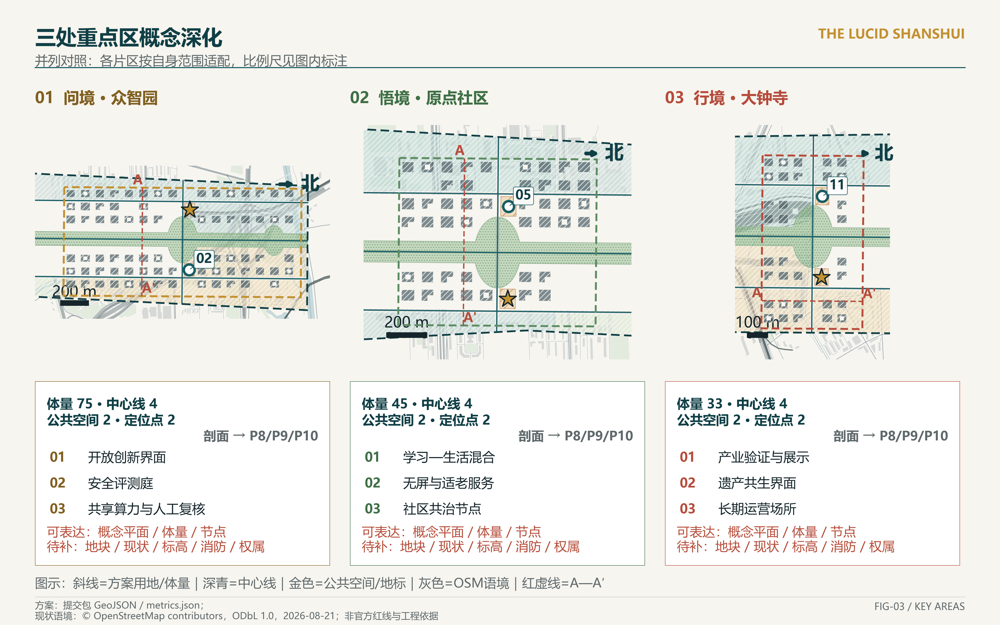
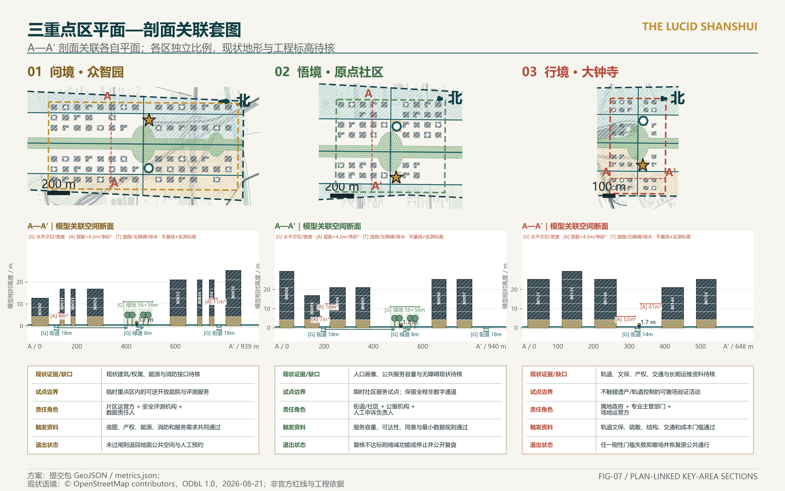
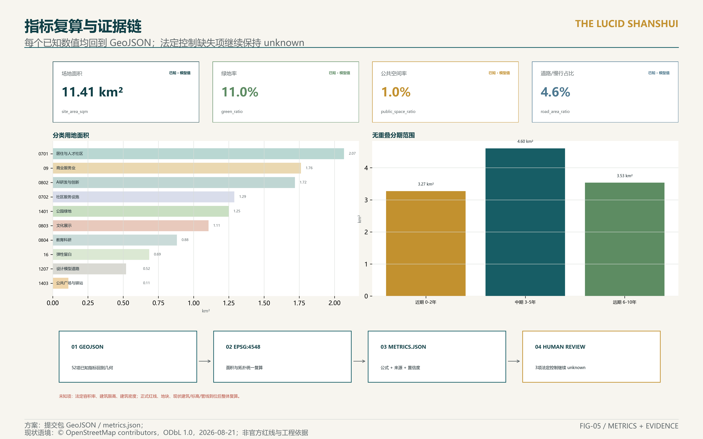

总体设计与三重点区
一条公共空间骨架 · 三处差异化试点 · 十二个可复核服务节点
人机切换的公共空间基础设施
本页严格区分OSM开放数据语境、仓库临时范围与可回到提交GeoJSON和metrics.json的设计模型；AI概念图不作为边界、面积、控规或工程证据。
43.6 km²统筹研究范围来自任务书；约11.4 km²总体范围及三处重点区采用仓库临时边界。
OSM仅作道路、轨道、建筑、水绿与设施语境且完整性待核；设计空间要素以GeoJSON为准，面积投影至EPSG:4548复算；法定容积率、限高、退线和正式红线继续待补。

一条公共空间骨架 · 三处差异化试点 · 十二个可复核服务节点

把已公开任务依据、临时几何、设计模型与待补专业资料分层表达

全部用地单元来自同一场地分割；面积以 EPSG:4548 复算

从线性口号转为可定位、可计数、可退出的服务网络

并列对照：各片区按自身范围适配，比例尺见图内标注

A—A′ 剖面关联各自平面；各区独立比例，现状地形与工程标高待核

每个已知数值均回到 GeoJSON；法定控制缺失项继续保持 unknown
site-overview.png；同源场地、用地、网络、重点区与节点。
43.6 km²统筹研究、约11.4 km²总体设计、三处临时重点区。
OSM 4,940项开放数据要素仅作低对比语境且完整性待核；临时范围与概念体量均不冒充测绘、现状普查或法定红线。
众智园、原点社区、大钟寺分别放大，以A—A′关联平面和概念体量剖面。
13个无缝图斑按10个用地代码汇总，场地覆盖率100%。
9条道路中心线要素；道路面积另以LU-ROAD与road_area_sqm计量。
沿主轴识别、由过街联系串联的绿地系统，12个公共空间面与12个服务定位点，其中地标3个。
153个重点区概念体量；现状建筑与法定高度仍属数据缺口。
3段不重叠分期；实施受资料与决策门槛约束。
12项协议均含非AI基线、证据方法/频率、有效期和续期/缩减/停止决定。
全部已知值回到metrics.json公式与GeoJSON来源。
逐项见compliance_matrix.json，不以统一模板证据代替。
以self_check.json及最终命令输出为准；专业质量另行人工审查。
权威等级、允许用途与限制逐条见sources.json。
DATA-SRC-JINGZHANG-CONTROL-PLAN-APPROVAL-20260812仅支持批复状态；批复成果数据缺口按A-APPROVED-PLAN-DATA-GAP-001保持。
设计模型假设、置信度和复算触发条件见assumptions.json。